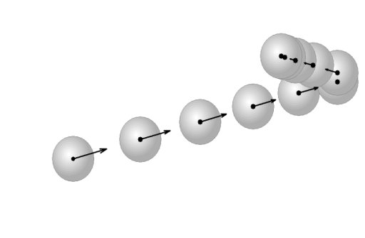
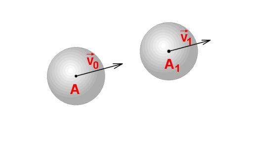
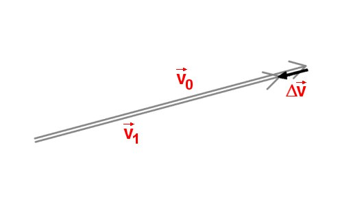
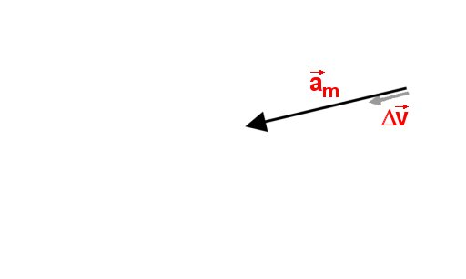
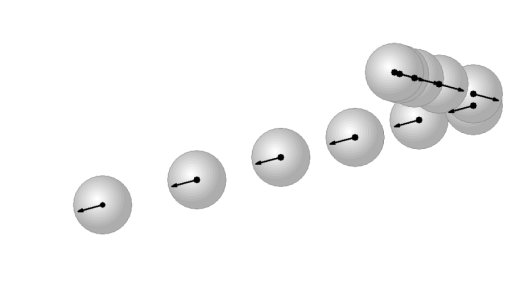
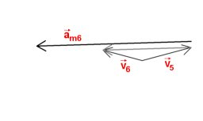

- Fig. 1
- Vitezele instantanee succesive ale centrului unei bile.
|

- Fig. 2
- Viteza bilei se modifică. Cât şi încotro?
|

- Fig. 3
- Diagrama vitezelor.
|

- Fig. 4
- Vectorul acceleraţie medie.
|

- Fig. 6
- Acceleraţiile instantanee ale centrului bilei.
|

- Fig. 7
- Acceleraţia medie a centrului bilei în cel de-al 6-lea interval.
|